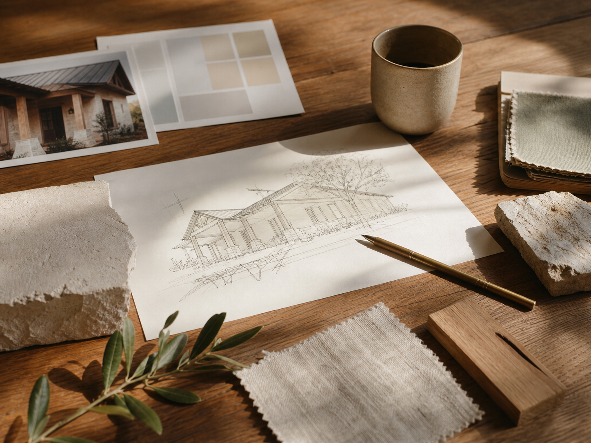
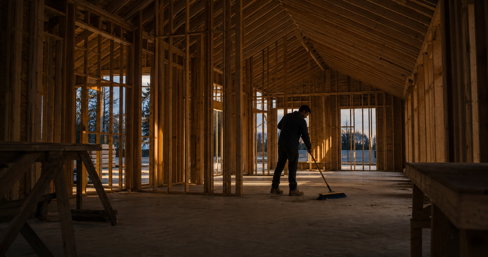

Journal
The Art of Building Beautifully
A deeper note on purpose, proportion, material, and the quiet decisions that make a house feel intentional from the first sketch to the final threshold.
Read the note
A deeper note on purpose, proportion, material, and the quiet decisions that make a house feel intentional from the first sketch to the final threshold.
Read the note
An honest look at the numbers. Per square foot, total project, and what moves the price up or down.

The question almost everyone asks. The honest answer and why it matters more than you think.

A realistic custom home timeline for Arizona and what you can do to keep things moving.

The honest version of what to expect. Timeline, decisions, surprises, and how to stay sane.

White oak, limewash, moving stone, and spaces that feel considered without feeling decorated.

What Arizona actually asks of a house. Heat, light, monsoons, and the design that comes naturally from all of it.

The stuff worth asking before you sign anything. License, fees, who is on site, and how surprises get handled.

Arizona land looks simple on paper. Here is what to actually check before you close.
More Notes
Nothing too loud. Just enough notes to make a home feel more considered.